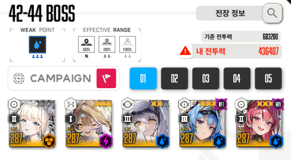
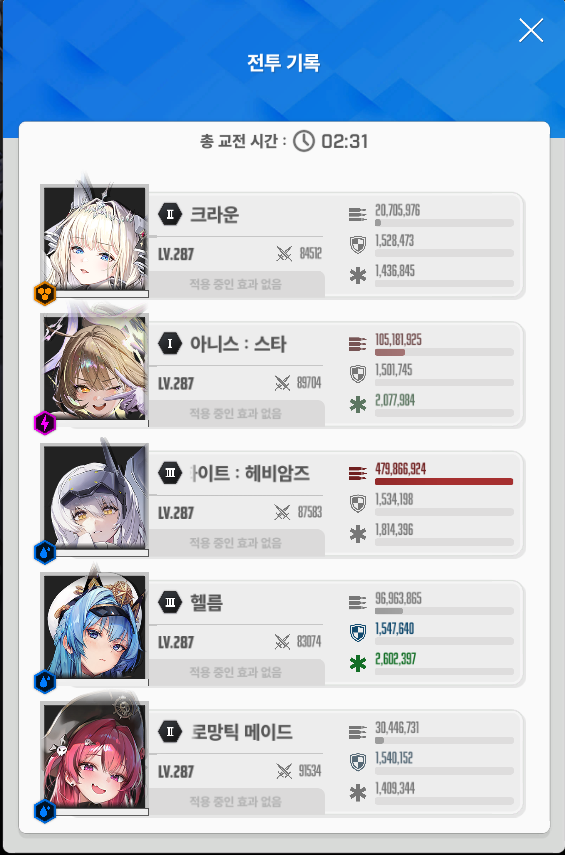

--조합--
아니스 크라운 메스트 각설 헬름
장비강화 및 옵작은 유튭 설명란 참조
******공략에 들어가기 앞서 설명할 점******
온리원은 처음 나오는 바다의 마수 (통칭 뿔) 를 못부술 시 클리어 불가능
온리원은 파츠 ( 바다의 마수 ) 를 부수거나 속성저지 or 암전저지 를 하고 나오면 코어가 등대위쪽에 노됨 ( 오토에임으로 맞음 )
--패턴--
2분 53초 : 2번 자리 레이저 후 4번자리 레이저 발사
2분 48초 : 바다의 마수 등장
2분 33초 : 요격가능 미사일 다수 발사
2분 27초 : 베히모스 지지미 저지 패턴
2분 19초 : 1번자리레이저 후 3번자리 레이저 다음 5번자리 레이저 발사
2분 10초 : 지즈 등장 후 약 5초간 차징하여 지즈빔 발사
1분 59초 : 속성저지
1분 40초 : 암전저지
1분 18초 : 1번 -> 5번까지 레이저 발사
1분 06초 : 베히모스 지지미 저지 패턴
0분 57초 : 5번 -> 1번 레이저 발사
0분 46초 : 바다의 마수 등장
각 패턴은 바다의 마수 처치시간 혹은 저지 패턴의 시간에 따라 달라질 수 있으니 참고 바람
--택틱--
패턴 설명에 나온 레이저는 크라운 보호막이 없다면 무조건 엄폐를 해줘야 함
입장 후 버스트를 바로 켜주지 말고 아니스가 첫번째 레이저를 엄폐 성공한 후 메스트 각설 버스트를 켜서 바다의 마수 없애주기
이때 각설 버스트 풀차징 2발 박아주고 나머지는 톡톡이를 치는게 더 쎔 ( 순차뎀 딜이 뿔에는 들어가지 않음 )
이후 두번째 버스트도 살짝 미뤄서 2분 34초 가량 온리원 등대에서 빨간 불빛이 점등되고 나면 버스트를 켜주기
2분 27초에 베히모스 저지가 나오므로 미리 저지 위치에 각설 에임을 가져다놓고 한발 풀차징 장전하여 쏜 후 나머지 톡톡이로 저지해주기
2분 10초에 나오는 지즈빔은 엄폐해주기
1분 59초 속성저지는 본인 입맛에따라 저지를 빨리하거나 늦게하기 ( 작성자는 조금 늦게 저지했음 )
1분 40초 암전저지에서 풀버스트 상태의 아니스 공격 시 흰색 가짜저지가 터지게 되므로 각설 톡톡이나 헬름 톡톡이로 저지하기
( 작성자는 암전저지 중 세번째 마지막 원 하나를 각설 풀차징으로 없애서 버충을 챙김 )
암전저지 이후 각설 버스트를 쓰고난 후 헬름 버스트를 미뤄서 베히모스 저지할 때 써주기
1분 06초에 나오는 베히모스 저지도 첫번째와 마찬가지로 저지 위치에 에임 대기해놓기 ( 저지원이 가운데 아래쪽에 한개 더 늘어남 )
그 다음 버스트를 미뤄서 0분 46초 가량에 나오는 바다의 마수를 각설 버스트로 없애주기
이후 떄리면 잡아짐
